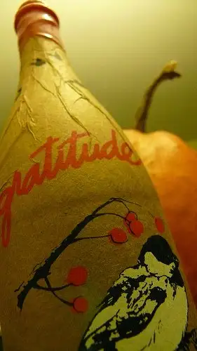

During a particularly difficult phase in my life a while back, a wise teacher suggested I keep a daily gratitude journal to be mindful of the good things flowing into my world. Some days, all I could muster was, “Today, I am alive,” and a few other seemingly tiny blessings. Back then, it seemed a lame attempt to conjure up something, anything, to write down. But in hindsight, I can see so clearly that the gift of life is the most profound of all blessings. Now, even when it’s not a particularly rotten day, I often find myself feeling grateful for life first; not as a “this will have to do for now” option, but as a main focus from which all other blessings come.
{kind=link}
It is somehow heartening to consider that even when the future seems uncertain, we can be assured we are constantly evolving and changing along with the world around us. What seems like an ending might be a beginning. What appears to be a unending cross might last only a short while. A certainty is that it will not last forever. Even the good stuff will end eventually, so why not appreciate it while it’s here? I know this isn’t my wisdom. It’s the wisdom of others who have gone before me and figured it out first, but I’m grateful to have internalized now for myself.
Last night, my daughter began complaining of a headache. A short while after I’d gone to the grocery store to buy some children’s pain-reliever, she turned white and got that funny look in her eyes that says, “This isn’t what I need. I need the toilet bowl!” And so, as she “worshipped the porcelain god,” I stood near, pulling back her hair, putting it into a ponytail, then helping her to find a comfortable resting place and cleaning up the mess.
Though she’s feeling better now, her illness kept her home from school today, altering several of my Monday plans as well. Nevertheless, I felt so grateful as I went about my day at home, checking on her and her brother from time to time, fixing them lunch, holding back from the wild running that usually happens on Mondays. I got caught up on some phone calls and threw supper into the Crockpot hours before needed. By noon, dinner was underway! Assured of her recovery, I allowed myself to fill up with gratitude…for a quiet day at home and the comfy contentedness that can come with that; for the chance to be here for her and not have to miss anything truly monumental. Nothing nagged at me, nothing said I ought to be somewhere else. I was exactly where I was meant to be today, and that is a satisfying feeling.
And then, when I went to retrieve the school kids, I heard something on the radio that made me pause. It’s one of those “pre-Lenten” messages I seem to be hearing so often these days. “God is nearer to you than you are to yourself.” What an awesome truth to consider. I think of the song we used to sing in concert choir in college, “No Hiding Place.” It’s a prospect that shouldn’t scare us or make us feel we’ve been exposed. Instead, we ought to feel comforted that there is One who knows us better than we know ourselves. What a relief off our shoulders to consider that we will never have to explain ourselves to at least one being in this world — our Creator.
I’ll let you chew on that a while, as I’ve been doing for the last hour. In the meantime, tomorrow’s the day my monthly parenting column will be printed, so I’ll be back then to share the latest with you. In other words, this is the last time I’ll be “talking” with you pre-Lent. The next time you hear one of my regular updates, it will be on Ash Wednesday.
Before I leave, though, I have to share a small excerpt that came from a friend through email today. She’d recently met with her spiritual director, who gave her these thoughts on Lent: “Lent is a time of deepening,” she’d said. The question to ask then should be, “What’s my focus?” Once that’s identified, the goal should be to focus on that even more; to go deeper with it.
In other words, as I said earlier, take the plunge.
Whether you partake in Lent or not, I wish for you a deepening of your senses, a plunge that will bring you to the surface a few weeks from now with an ever-expanding, ever-more-joyful heart.